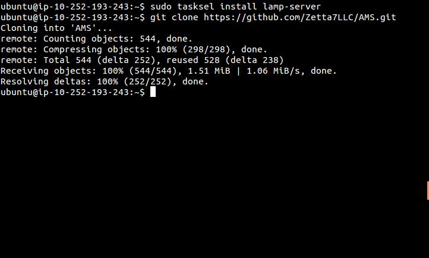
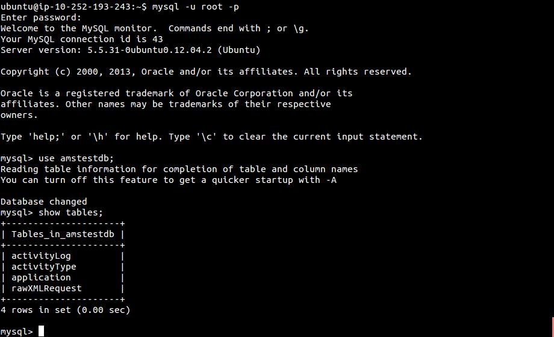
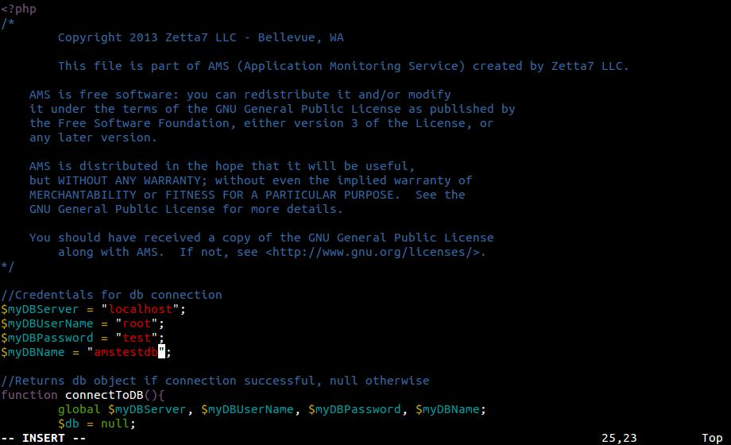

1. Install LAMP stack
>sudo tasksel install lamp-server
2. Clone git repo
>git clone https://github.com/Zetta7LLC/AMS.git
3. Create MySQL tables
mysql>create database amstestdb;
4. Import tables to database using scripts/CreateTables.sql
$>mysql -u root -p -h localhost amstestdb < ~/AMS/scripts/CreateTables.sql
5. Check your database for structure.

6. Delete CreateTables.sql
$>rm -rf ~/AMS/scripts/CreateTables.sql
7. Move AMS folder to proper folder for webserver.
$>sudo mv AMS /var/www/
8. Verify installation of dashboard via web browser
http://yoursite.com/AMS/dashboard
9. Edit AMS/dashboard/includes/amslib.php file to include your MySQL connection information.
AMS$>sudo vi dashboard/includes/amslib.php
10. Everything should now be running. You can test this by creating an AMS application ID under 'manage' from the dashboard home.